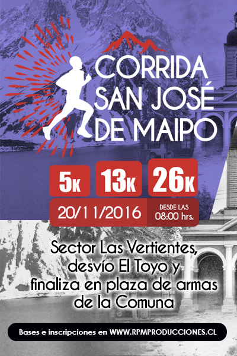
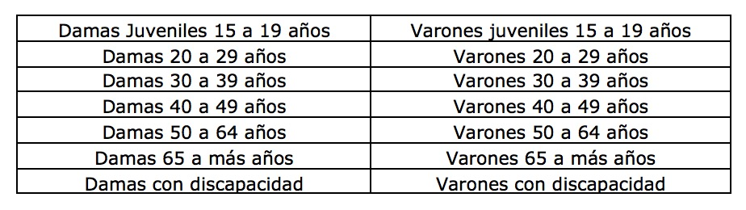
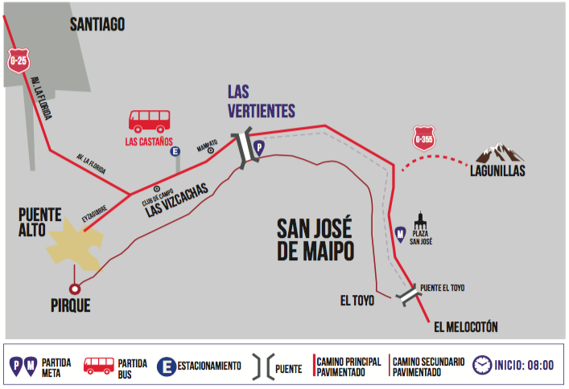
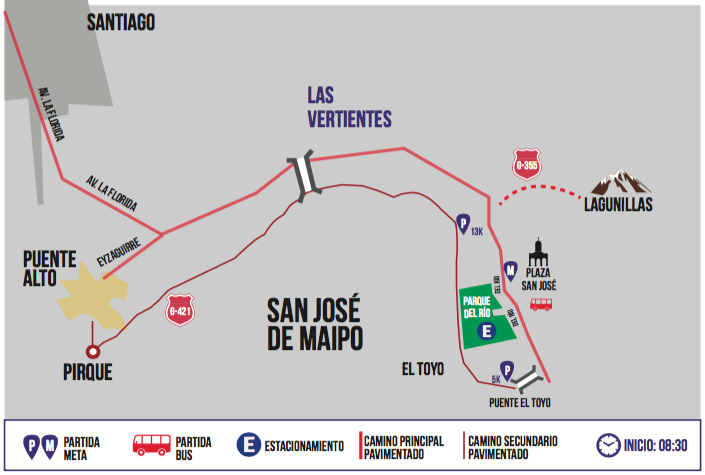
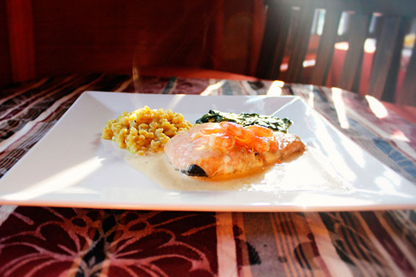
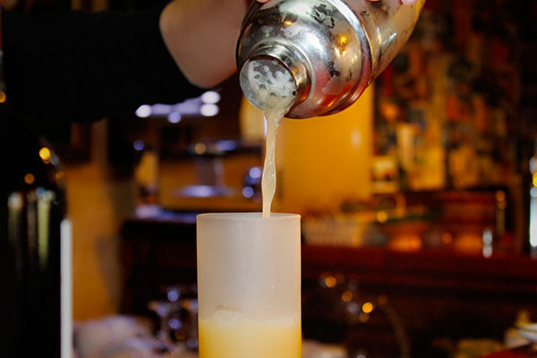

El Running se tomó San José de Maipo!!
Esta comuna destaca por tener una
ubicación y clima privilegiado para realizar variadas actividades
deportivas al aire libre.
Con sus singulares paisajes, rodeados por cerros
y el rio Maipo que cruza la comuna, estimulan a todo corredor a poner a
prueba su resistencia disfrutando del trayecto que existe entre las
vertientes y la plaza de armas de la comuna.
Con sus 3 distancias, te
invitamos a ser parte de ésta maravillosa experiencia deportiva y así
disfrutar un grato momento en familia y/o amigos.

Bases
La organización va a disponer de buses gratuitos para el traslado de los competidores a cada uno de los 3 puntos de partida, pero no es obligatorio para aquellos que van en familia, donde pueden ir a dejar al participante y devolverse al punto de meta que es la plaza de San José de Maipo.
Se exige no dejar ningún medio de transporte en el recorrido mientras se realiza la carrera, para eso existirán sectores específicos para dejar el vehículo que se comentan a continuación.
El traslado en buses a cada punto de partida se va a dividir en 2 zonas:
Participantes de 26 kilómetros:
En caso de asistir sólo, dejar su vehículo en recinto cerrado ubicado en la calle “Los Castaños”, ubicado a 300 metros hacia San José de Maipo desde el frontis del Club de Campos Las Vizcachas.
Para éste caso, los buses comenzarán los viajes desde el frontis del recinto a partir de las 06:00 hrs y cada 30 minutos. El último bus que sale del recinto será a las 07:30, así que solicitamos puntualidad ya que cada punto de partida va a tener servicio higiénico, guardarropía, hidratación y frutas.
En caso de venir en familia o grupo donde hay alguien que puede ir a dejar a los participantes al punto de partida, puede efectuarlo y debe volver inmediatamente a la plaza de armas de San José donde será la meta.
Corredores de 5 y 13 Kilómetros:
En caso de asistir sólo, pueden dejar su vehículo en reciento cerrado llamado “Parque del Rio” con un valor de ingreso promocional para los participantes, cuya entrada se ubica en la intersección de las calles Cuatro Sur y Del Rio. Esto es a 300 metros de la plaza de armas hacia el sur, por la calle Del Rio.
En caso de venir en familia o grupo donde existe alguien que puede ir a dejar a los participantes al punto de partida, puede efectuarlo y debe volver inmediatamente a la plaza de armas de San José donde será la meta.
Para ambas distancias, los buses comenzarán los viajes para dejar a los corredores a los puntos de partida de 5K y 13K desde las 06:00 con una frecuencia de 30 minutos. El último bus va a partir a las 07:30, así que solicitamos puntualidad ya que cada punto de partida existirá servicio higiénico, guardarropía, hidratación y frutas.
Éste servicio de traslado será completamente gratuito y limitado sólo para aquellos participantes que estén oficialmente inscritos presentando el número del corredor y su carnet de identidad.
Distancia 26 Kilómetros.
La partida se ubica en sector "Las Vertientes", desvío por ruta G-27 hacia la localidad de "el Toyo". En ese lugar se ubicará el punto de partida debidamente señalizado.
El recorrido corresponde al tramo demarcado en color azul, siempre rodeando los cerros del sector y el borde del río Maipo. La llegada finaliza en la plaza de armas de la comuna.
Se señalan los extremos del recorrido con las letras P (Partida) y M (Meta).
Distancia 13 Kilómetros.
Para llegar a la partida, deben seguir por desvío "El Toyo" (ruta G-27) y continuar por el mismo trayecto de la distancia 26K a un punto intermedio, la cual, estará adecuadamente señalado. Finaliza en plaza de armas de la comuna.
El trayecto corresponde al tramo señalado en color azul y se señalan los extremos del recorrido con las letras P (Partida) y M (Meta).
Distancia 5 Kilómetros.
Este recorrido comienza aproximadamente a 1 kilómetro del puente el Toyo y se señala con un color claro. Finaliza en la plaza de armas de la comuna.
Se señalan los extremos del recorrido con las letras P (Partida) y M (Meta).
Si el/la atleta no cumpliera estos procedimientos, su inscripción se invalidará automáticamente.
La carrera contempla los siguientes topes de inscritos por distancia:
5K: máximo de 500 cupos
13K: máximo de 500 cupos
26K: máximo de 500 cupos
1) Atletas Nacionales.
a) Período promocional "Preventa": entre el 05 de Julio y el 08 de Agosto de 2016, ambas fechas inclusive.
Corrida 5K: $8.000.-
Corrida 13K: $14.000.-
Corrida 26K: $17.000.-
b) Primer Periodo: entre el 09 de Agosto al 12 de Septiembre de 2016, ambas fechas inclusive.
Corrida 5K: $10.000.-
Corrida 13K: $16.000.-
Corrida 26K: $19.000.-
(c) Tercer Periodo: entre 13 de Septiembre al 15 de Octubre de 2016, ambas fechas inclusive. A menos que las inscripciones se hubieran agotado con anterioridad.
Corrida 5K: $11.000.-
Corrida 13K: $17.000.-
Corrida 26K: $20.000.-
2) Atletas Extranjeros.
Toda distancia tiene el valor de US $25 para cualquier periodo de inscripción. A menos que las inscripciones se hubieran agotado con anterioridad.
NOTAS IMPORTANTES:
* Todos Los períodos de inscripción detallados anteriormente y sus respectivos valores, tendrán validez solo hasta completar los 500 cupos para cada distancia.
* Si el/la participante, por razones fortuitas o fuerza mayor, no participa del evento, valor de la inscripción no será reembolsado.
* Queda estrictamente PROHIBIDA la entrega de falsa información en el formulario de inscripción, así como también de suplantar la identidad de un corredor, compitiendo con un número de carrera asignado a otra persona o inscribirse en una categoría que no corresponda a la realidad, siendo sancionada por la organización y sin derecho de devolución del valor de su inscripción.
* Finalmente, estará estrictamente prohibida la re-venta de inscripciones. La persona que sea sorprendida revendiendo inscripciones del evento será sancionada conforme a la ley, quedando la inscripción anulada y sin derecho a devolución de valor alguno.

El kit de productos será entregado a los atletas previamente inscritos, el viernes 18 de Noviembre de 12:00 a 19:00 horas en la plaza de armas de la comuna de San José de Maipo y para el día sábado 19 de noviembre el retiro será en algún lugar céntrico de Santiago en el mismo horario y será avisado con la debida anticipación a través de nuestro sitio web www.rpmproducciones.cl. Para el retiro de Kit de competencia, el atleta deberá presentar su documento de identidad y comprobante de pago.
El número de la competencia debe colocarse obligatoriamente en el pecho del participante, completamente extendido y horizontal, sin retocar, manipular, recortar ni doblar hasta el término de la carrera.
NO SE ENTREGARÁ KIT DE COMPETENCIA EL DIA DEL EVENTO NI POSTERIOR A ÉL.
NOTA IMPORTANTE:
El control del evento mediante sistema Chip, lo proporciona una empresa externa a la organización, asumiendo esta, toda la responsabilidad en cuanto a entrega de resultados y tiempo de cada uno de los atletas.
Corrida San José de Maipo 2016, dispondrá los siguientes premios para los participantes de 13K y 26K, pagaderos el mismo día del evento a partir de las 11.30 horas.
La organización no envía premios, dinero en efectivo y medallas al domicilio del atleta que NO se encuentre presente al momento de la ceremonia de premiación.
1. Premiación Competencia 26 km
A. Clasificación general (Damas y Varones):
- 1° Lugar $ 200.000 + Medalla
- 2° Lugar $ 120.000 + Medalla
- 3° Lugar $ 100.000 + Medalla
B. Clasificación por categoría
- 1º Lugar Medalla
- 2° Lugar Medalla
- 3° Lugar Medalla
2. Premiación 13 km
A. Clasificación general (Damas y Varones):
- 1° Lugar $ 100.000 + Medalla
- 2° Lugar $ 70.000 + Medalla
- 3° Lugar $ 50.000 + Medalla
B. Clasificación por categoría
- 1º Lugar Medalla
- 2° Lugar Medalla
- 3° Lugar Medalla
3. Corrida familiar y recreativa de 5 km
Medalla oficial del evento para todos los corredores que crucen la meta.
Premios generales
-Todos los premios están expresados en pesos chilenos.
-Todos los participantes, oficialmente inscritos, que completen el recorrido recibirán su medalla de finalista.
-Los premios no son acumulativos, por lo tanto, aquellos atletas que se ubican en los tres primeros lugares generales de la competencia (Elite), quedan automáticamente eliminados de sus categorías por edades.
-El o la competidora que recibe el día de la premiación, dinero en efectivo y/o medalla y que posteriormente es detectada por haber cometido alguna infracción a las normas del evento, estará obligado a devolver tales premios.
- No llevar número de carrera en el pecho.
- No realizar el recorrido siguiendo el trazado oficial.
- Engañar a la organización, ya sea mediante la suplantación de identidad, correr una distancia distinta a lo indicado en el formulario de inscripción, etc.
- Por muestras de un comportamiento antideportivo, entre otras conductas, recibir apoyo tercero que se movilicen, dentro o fuera del circuito, sea o no que utilicen vehículos motorizados, bicicletas u otro medio de transporte.
- Correr con el número de carrera asignado a otro atleta.
- La organización estará facultada para dar aviso a Carabineros y hacer expulsar a los terceros que sean sorprendidos por conductas antideportivas.
- Cruzar las zonas de controles señalizadas.
- No obedecer a los Jueces de ruta, jueces de carrera y personal de organización.
- No respetar las instrucciones de la organización en cuanto a las zonas de encajonamiento, tiempos de registros y otras conductas antirreglamentarias, reservándose la organización el derecho de retirar el número de inscripción y expulsarlo del evento.
- No se permitirá el encajonamiento en sector de partida de ningún participante sin su número de inscripción.
- El atleta debe conocer e informarse del recorrido de cada distancia, publicado en reglamento y sitio web del evento.
- Cuando no se use la polera oficial del evento desde la partida hasta el término de la carrera.
- Todo aquel participante que corra sin número, lo hace bajo su responsabilidad, sin tener derecho a ninguno de los privilegios a los que tienen derecho los/las atletas oficialmente inscritos. Sin perjuicio del derecho que le asiste a la organización de impedir su participación en el evento.
2. La organización pondrá a disposición de los/las atletas servicios de aprovisionamiento en la llegada (hidratación y variedad de frutas).
3. La organización dispondrá de un servicio de ambulancias en el recorrido y en la meta.
4. Se dispondrá de un móvil que irá cerrando el recorrido de la competencia y que servirá para apoyar o retirar a cualquier atleta de la competencia, trasladándolo al sector de llegada. La organización no asume ni asumirá responsabilidad alguna por dicho transporte benévolo.
5. Servicio de Guardarropía. Aproximadamente unos 40 minutos antes de la largada de cada distancia, se va a ubicar un móvil recibiendo la indumentaria debidamente cerrada en los bolsos del evento, la cual, podrá ser retirada en la meta. La organización no se responsabiliza de los objetos entregados en él (productos inflamables, tóxicos, frágiles, artículos valiosos, etc.).
6. La organización tendrá servicio de masajes en la meta, destinado principalmente para aquellos atletas que recorrieron las mayores distancias.
"Me encuentro en estado de salud óptimo para participar en la "Corrida San José de Maipo 2016". Además, eximo de toda responsabilidad a la organización, patrocinadores u otras instituciones participantes ante cualquier accidente o lesión que pudiera sufrir antes, durante y/o después del evento deportivo, renunciando desde ya a cualquier acción legal en contra de cualquiera de dichas entidades.
Durante el desarrollo de la competencia contribuiré con la organización para evitar accidentes personales. Autorizo además a que la organización haga uso publicitario de fotos, videos y cualquier otro tipo de material audiovisual en el que pueda figurar, aceptando la publicación de mi nombre en la clasificación de la prueba, en los medios de comunicación y/o Internet, sin esperar pago, compensación o retribución alguna por este concepto.
Entiendo y acepto que por tratarse de un evento que se realiza sobre bienes nacionales de uso público, las autoridades del gobierno regional y municipal, pueden imponer restricciones, limitaciones o modificaciones a su trazado, uso, fecha y/o horario, sin previo aviso, de manera que libero de toda responsabilidad a la organización si alguna de dichas circunstancias se materializare o llegase a ocurrir. Asimismo, libero de responsabilidad a la organización si el evento tuviese que ser suspendido, pospuesto, o cancelado, total o parcialmente, por un hecho, ajeno a la voluntad de la organización, producido u ocasionado por un caso fortuito o fuerza mayor.
Acepto que lo anterior es condición necesaria para retirar el número de competencia y participar en la "Corrida San José de Maipo 2016".
Este recorrido comienza aproximadamente a 1 kilómetro del puente El Toyo. Se señalan los extremos del recorrido con las letras P (Partida) y M (Meta).
Es parte del trayecto recorrido por los participantes de los 26 kilómetros. Se ubica por el desvío el Toyo (ruta G-27), casi en frente al Hotel Guayacán. Se señalan los extremos del recorrido con las letras P (Partida) y M (Meta).
La partida se ubica en el sector Las Vertientes, en la intersección del desvío el Toyo (ruta G-27) con Avenida Ramón Subercaseaux. El recorrido es hacia la plaza de San José de Maipo por El Toyo. Se señalan los extremos del recorrido con las letras P (Partida) y M (Meta).
Inscripción de corredores
Traslado de los participantes en buses a los puntos de partida
Con la idea de que nuestros participantes sólo se dediquen a disfrutar de la carrera, la organización va a disponer de buses gratuitos para el traslado de los competidores a cada uno de los 3 puntos de partida, pero no es obligatorio para aquellos que van en familia, donde pueden ir a dejar al(los) participante(s) y dirigirse al punto de llegada que es la plaza de San José de Maipo.
Éste servicio de traslado será completamente gratuito y limitado sólo para aquellos participantes que estén oficialmente inscritos presentando el número del corredor y su carnet de identidad al momento de subir a los buses.
Se exige no dejar ningún medio de transporte en el recorrido mientras se realiza la carrera, para eso existirán sectores específicos para dejar el vehículo que se comentan a continuación.
El traslado en buses a cada punto de partida se va a dividir en 2 zonas.
Participantes de 26 kilómetros:
En caso de asistir sólo, dejar su vehículo en recinto cerrado ubicado en la calle “Los Castaños”, ubicado a 300 metros hacia San José de Maipo desde el frontis del Club de Campos Las Vizcachas.
Para éste caso, los buses comenzarán los viajes desde el frontis del recinto a partir de las 06:00 hrs y cada 30 minutos. El último bus que sale del recinto será a las 07:30, así que solicitamos puntualidad ya que cada punto de partida va a tener servicio higiénico, guardarropía, hidratación y frutas.
En caso de venir en familia o grupo donde hay alguien que puede ir a dejar a los participantes al punto de partida, puede efectuarlo y debe volver inmediatamente a la plaza de armas de San José donde será la meta y dejar su vehículo en recinto “Parque de Rio” con un valor de ingreso promocional para los participantes (recinto con zona de picnic y piscina) o bien dejarlo en alguna calle cercana a la plaza de San José de Maipo.

Corredores de 5 y 13 Kilómetros
En caso de asistir sólo, pueden dejar su vehículo en recinto cerrado llamado “Parque del Rio” con un valor de ingreso promocional para los participantes (recinto con zona de picnic y piscina), cuya entrada se ubica en la intersección de las calles Cuatro Sur y Del Rio. Esto es a 300 metros de la plaza de armas hacia el sur, por la calle Del Rio. En caso de no dejar vehículo en éste recinto, deben ubicarse en calles cercanas a la plaza de San José de Maipo.
En caso de venir en familia o grupo donde existe alguien que puede ir a dejar a los participantes al punto de partida, puede efectuarlo y debe volver inmediatamente a la plaza de armas de San José donde finalizan los recorridos.
Para ambas distancias, los buses comenzarán los traslados para dejar a los corredores a los puntos de partida de 5K y 13K desde las 06:00 con una frecuencia de 30 minutos. El último bus va a partir a las 07:30, así que solicitamos puntualidad ya que en cada punto de partida existirá servicio higiénico, guardarropía, hidratación y frutas.
El lugar exacto de salida de los buses para los competidores de 5 y 13 kilómetros será avisado con antelación por nuestra página web y FanPage.

Perfil de altimetría Corrida San José de Maipo
Tenemos a disposición de nuestros participantes el perfil de altimetría para el recorrido de 26 kilómetros. Todos los inscritos pueden descargar el archivo formato KMZ que puede ser visto con detalles mediante “Google Earth” y así conocer los perfiles de las rutas de nuestro evento.
Recorrido completo de los 26 Kilómetros:
- Extracción de datos: 09 de agosto del 2016 con dispositivo Garmin
- Dificultad de la carrera: Media - Alta
- Elevación base/mínima: 834 msnm
- Elevación máxima: 1020 msnm
- Elevación inicial: 846 msnm
- Elevación en la llegada: 971 msnm
- Pendiente máxima: 16,7%
- Pendiente media: 3,4%
- Horario Largada: 08:00 hrs
La ruta comienza en el sector las vertientes, desvío El Toyo (ruta G27), el cual, estará debidamente señalizado el día de la competencia.
Descarga el archivo acá
Descarga Google Earth acá
Hoteles & Restaurants Recomendados


La Petite France Hotel Spa & Restaurant
Christian Schall y Dafne Ugarte les invitan cordialmente a descubrir el mundo en el que ellos habitan y trabajan hace más de 15 años.
Nuestra ubicación es en el Cajón del Maipo en la localidad de Guayacán que se encuentra a 5 minutos del pueblo de San José de Maipo y a una hora del centro de Santiago.
- 2-28611967
- contacto@lapetitefrance.cl
- lapetitefrance.cl
- Camino al Volcan 16096, Guayacán, San José de Maipo
Corrida San José de Maipo
10/10/2016


{kind=link}